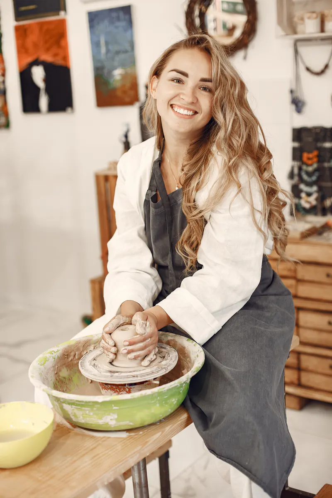

Egy kis kíváncsiságból új élmény születik
Találd meg a neked való alkotóélményt.
Kipróbálnád a korongozást, elmélyülnél az alapokban, vagy közös élményt keresel a csapatodnak? Szentendrei műhelyemben kezdőként is megtapasztalhatod az agyaggal való alkotás örömét.

Hogyan alkotnál szívesen?
Egyetlen alkalomra érkeznél, elmélyülnél az alapokban, vagy együtt alkotnátok? Válassz a programok közül!

Első találkozás az agyaggal
Korongozó kóstoló
Ismerkedj meg az agyaggal, próbáld ki a korongot, és tapasztald meg, hogyan formálódik az anyag a kezed alatt. Végig segítek, így előképzettség nélkül is bátran belevághatsz.
- Időtartam
- 1 alkalom · 3 óra
- Csoport
- legfeljebb 6 fő
- Tervezett időpont
- szombat, 14:00–17:00
18 500 Ft / főA program teljes díja.

Alapok négy alkalom alatt
Négyhetes kezdő kurzus
Ha egyetlen alkalomnál többre vágysz, ezen a kurzuson lépésről lépésre ismerkedhetsz meg a korongozás alapjaival. Az agyag előkészítésétől és központosításától az egyszerű edényformák kialakításáig haladunk. A négy alkalom során van időd gyakorolni, kérdezni és egyre önállóbban alkotni.
- Időtartam
- 4 alkalom × 2,5 óra
- Csoport
- legfeljebb 6 fő
- Tervezett időpont
- Szerdánként, 17:00–19:30
65 000 Ft / főA teljes, négyalkalmas kurzus díja.

Közös élmény, közös alkotás
Céges csapatépítő
Cseréljétek a megszokott munkanapot közös alkotásra! A műhelyben kipróbálhatjátok a korongozást és a kézi agyagformálást, miközben egymás új oldalát is megismerhetitek. Előképzettség nem szükséges: végig segítek, a programot pedig a csapat létszámához és elképzeléseihez igazítom.
- Időpont és időtartam
- előzetes egyeztetés szerint.
- Létszám
- a program kialakításakor egyeztetjük.
DíjazásA létszám és a program alapján egyeztetjük.Az ajánlat tartalmazza az agyagot, a mázat és a két égetést.
Így indul a közös alkotás
Válassz programot!
Nézd meg, melyik élmény áll hozzád közel.
Egyeztessünk!
Írj az űrlapon, és megbeszéljük a részleteket, valamint a szabad időpontokat.
Érkezz kíváncsian!
Az alapanyagokat és az eszközöket biztosítom.
Érdeklődés és kapcsolat
Melyik program érdekel?
Kipróbálnád a korongozást, közös alkotást szerveznél, vagy ajándékötletet keresel? Válassz programot, és írd meg, miben segíthetek! A kerámiákról is bátran kérdezhetsz.
Az érdeklődés elküldése még nem jelent helyfoglalást. A részleteket és a szabad időpontokat veled egyeztetjük.